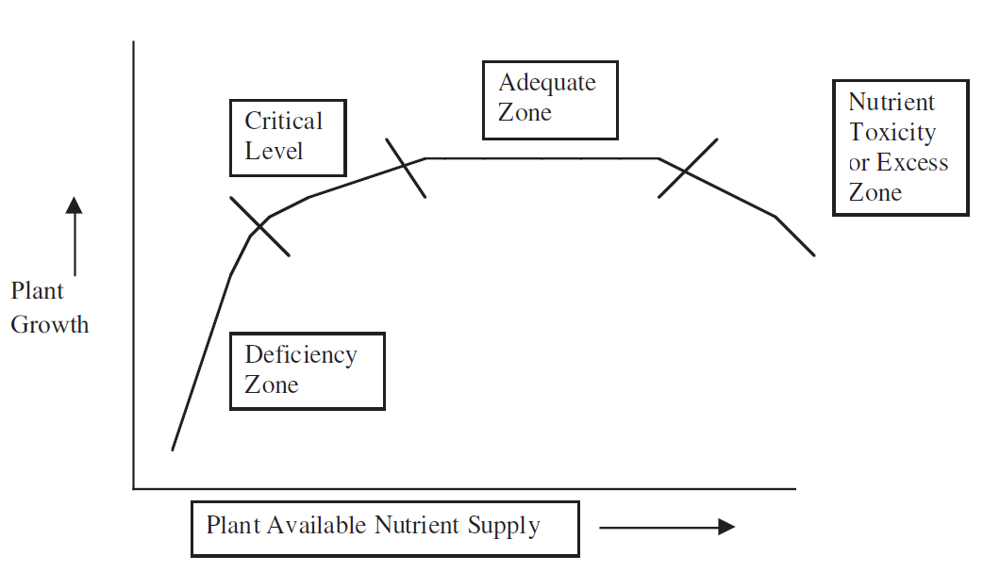

All substances that an organism needs in order to live and grow are called nutrients. In aquatic ecology, the term is often used to indicate the amount of phosphate (PO43-) and nitrate (NO3-) in the system. In the context of our mission, it is important to realize that plants (producers) use phosphorus and nitrogen for the production of proteins, nucleotides (DNA) and other organic molecules. Thus, in absence of nitrogen and phosphorus a plant cannot grow.
What is the relation between nutrient concentration and the rate of primary production? A good framework for thinking about this relationship is the so-called "range of tolerance". Organisms can live within a range of abiotic conditions. If we regard a temperature gradient, there will be two values – a minimum temperature and an maximum temperature – that set the upper and lower limits for a species' survival. Below the minimum and above the maximum, organisms will experience too much physiological stress to survive. Somewhere in between the minimum and the maximum is the optimum range, where the temperature for this particular species is most favourable. Similarly, plants species have a range of tolerance for each nutrient. Below a certain concentration, a plant will suffer from deficiency symptoms. Extremely high concentrations of a specific nutrient may have toxic effects. The concentrations below which plants show symptoms of deficiency differ from nutrient to nutrient. There are also differences between different species: some plants can cope with scarcity better than others.
Hypothetical range of tolerance for a specific nutrient.